Awakening Universal Compassion through the sacred Karuna symbols, chakra alignment, and karmic healing — a complete reference for your daily sadhana.
Listen to Simran's Karuna Healing guided meditation
Play this during your daily healing practice for guided support.
Watch the Karuna Healing visualization practice
A guided visual journey through the Karuna healing process. Watch to deepen your practice.
Each chakra corresponds to a planet (graha), element, and karmic layer
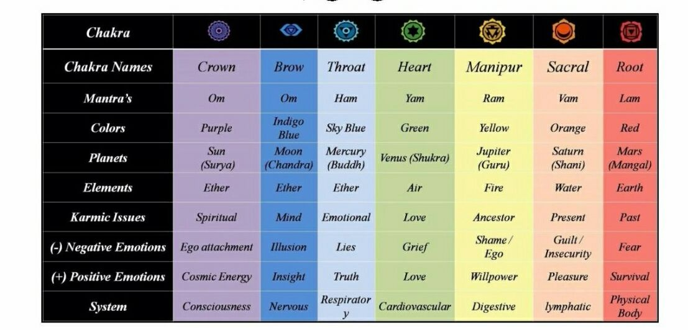
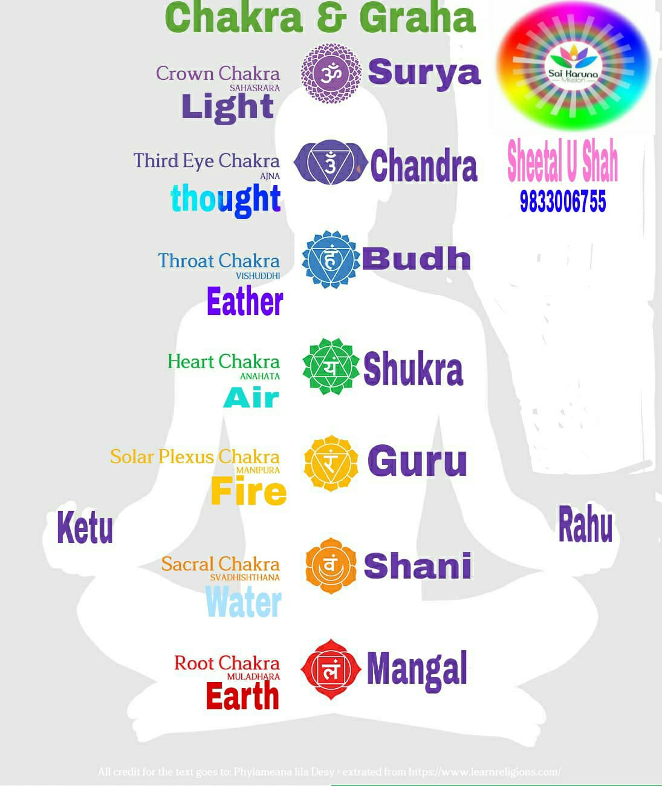
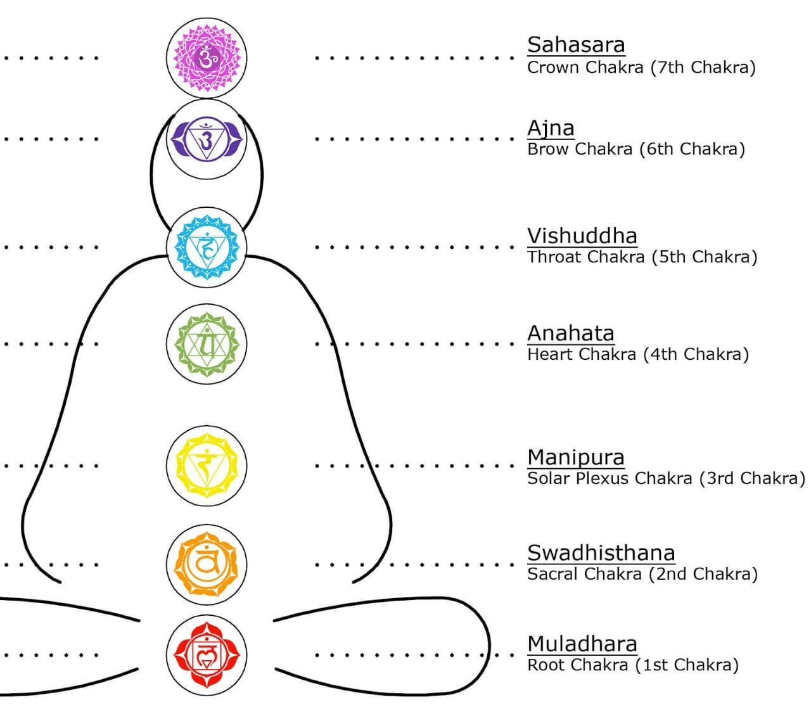
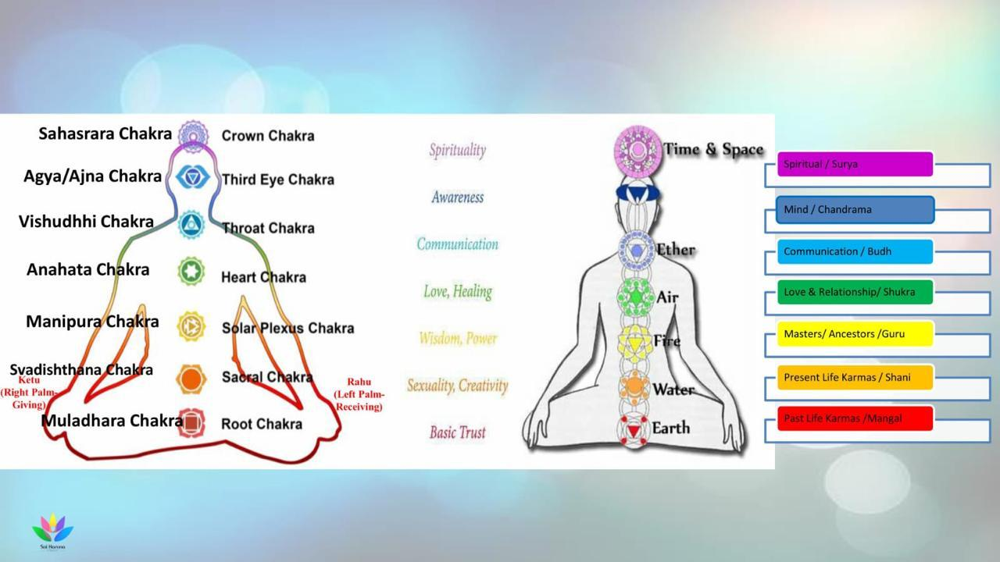
Sacred symbols used to channel Karuna energy across body, mind, and soul levels
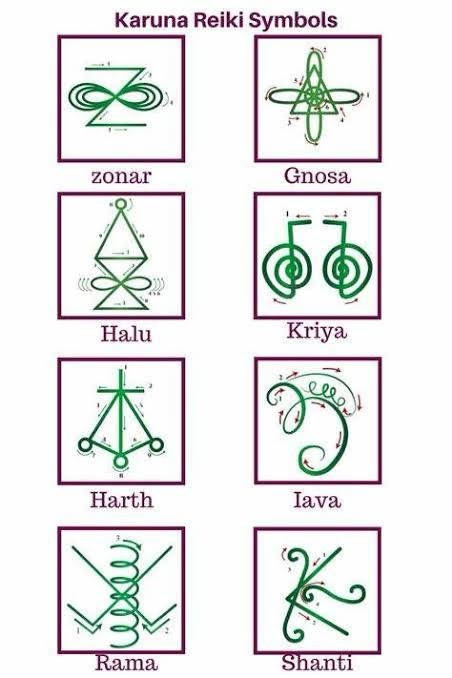
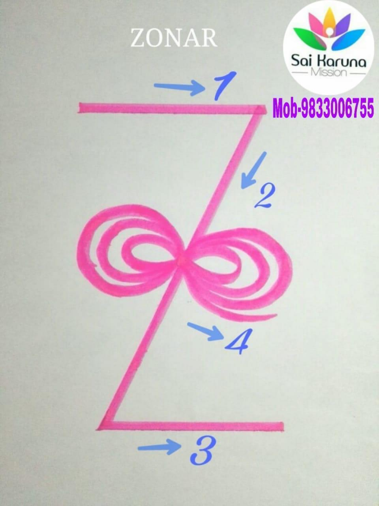
Works with past lives, karmic issues, and undefined patterns. Acts as a spiritual anesthetic — its energy penetrates deep to eliminate physical, mental, and emotional discomforts at the cellular level.
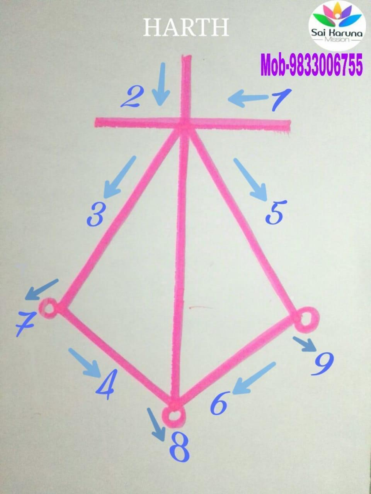
Heals heart issues, develops compassion, restores love of life. Excellent for addictions of all kinds. Inspires and guides to right action through spiritual communication and unity.
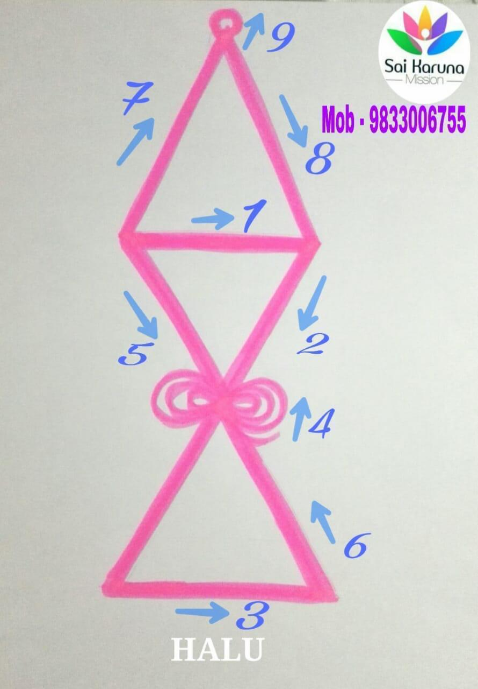
Works in higher dimensions and deeper levels. Restores balance on the physical plane, breaks negative patterns in the unconscious mind. Addresses abuse issues, shadow self, and psychic/psychological attacks.
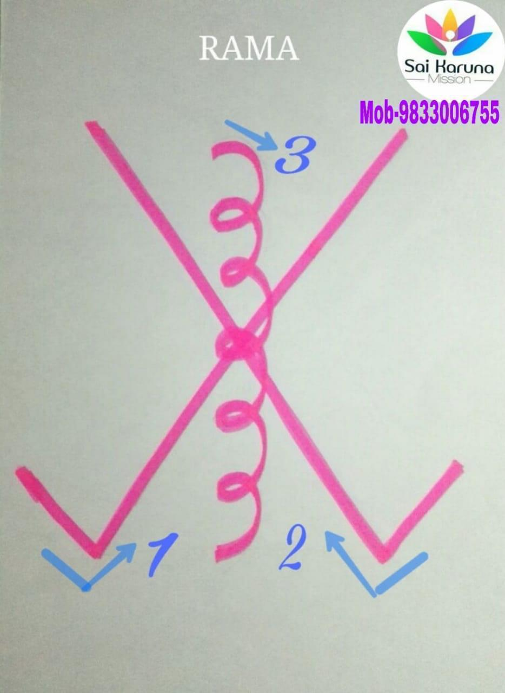
Heals and harmonizes all chakras. Cleanses crystals, rooms, and spaces of negative energies. Empowers material goals, creates determination, and clears dense blockages in the etheric field.
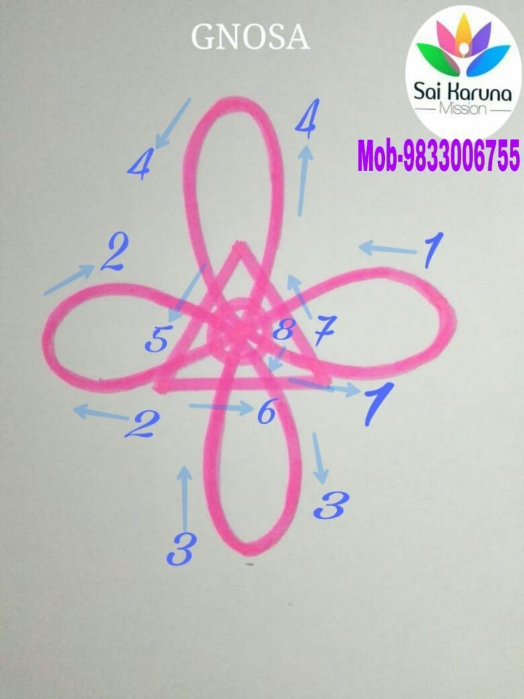
Links strongly with the higher self, bringing higher consciousness into the physical body. Increases awareness, communication, and learning abilities. Apply before meditation for best experience.
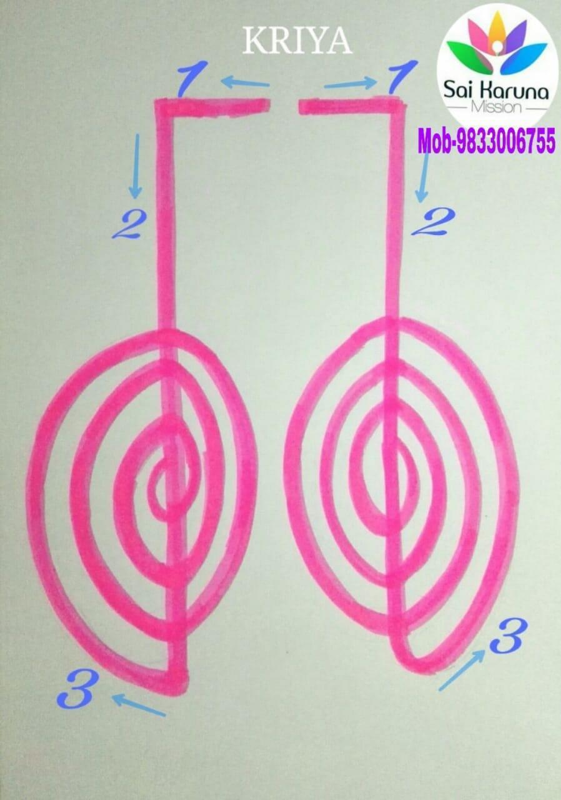
Used for physical manifestation and healing humanity. Helps put goals, dreams, and vision into action. Connects chakras, cleanses and energizes the aura, and purifies spaces.
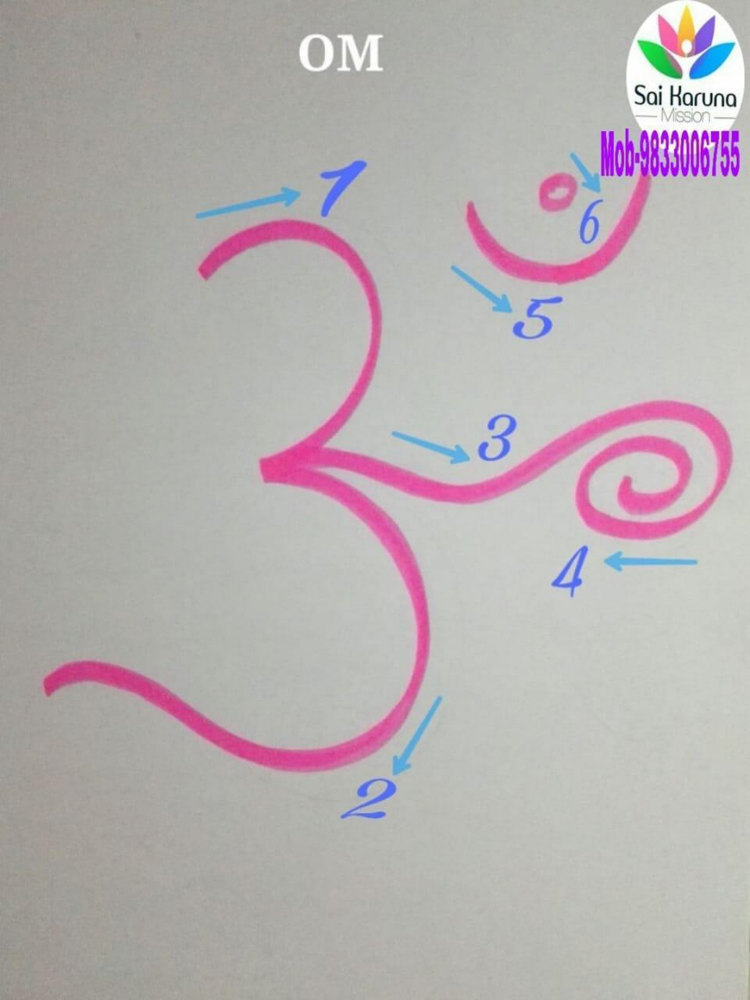
The primordial Sanskrit symbol of oneness. Opens the crown chakra, purifies, protects, and stabilizes the aura. Used across many eastern spiritual practices — the frequency of earth's rotation.
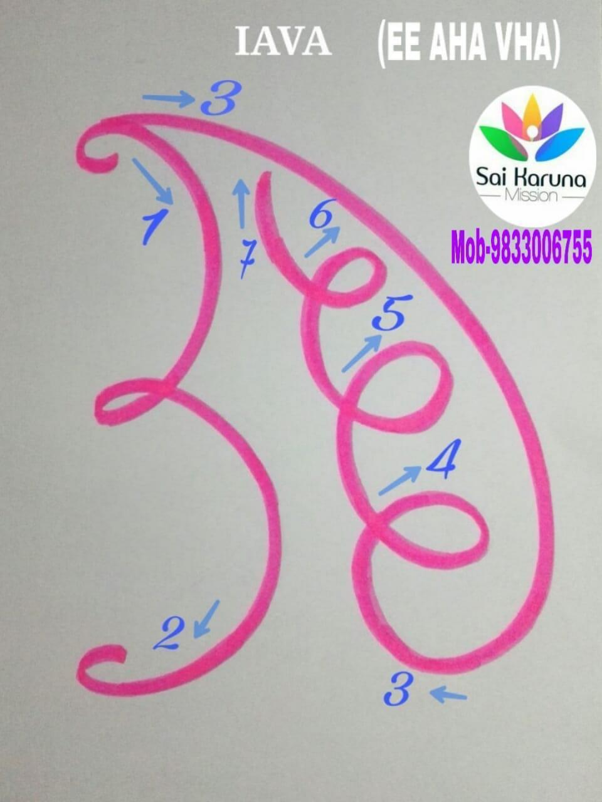
Helps manifest wishes and recreate your reality. Empowers personal Divine power, releases codependence, keeps the etheric heart clear, and helps live more consciously. Heals the earth.
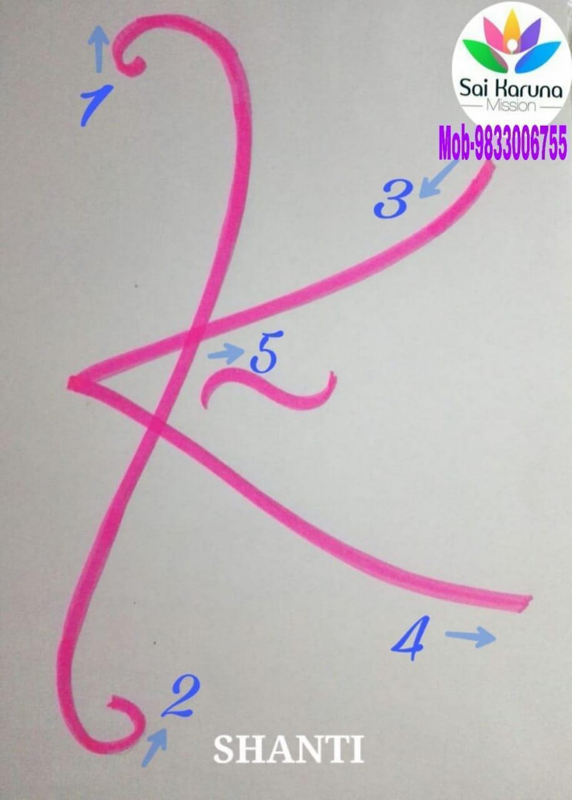
Releases fear, nightmares, and worries. Soothes the aura, heals the past, creates harmony in the present, and releases the future. Transforms situations into positive experiences. Aids trust in life and clairvoyance.
Follow these steps each session for self-healing or healing others
Call upon all Gods, masters, healing angels, and spiritual helpers. Ask to be blessed with energy to perform the healing. Set your intention clearly.
Charge all 9 major energy centers: Crown (Sahasrara), Third Eye (Ajna), Throat (Vishuddha), Heart (Anahata), Solar Plexus (Manipura), Sacral (Swadhisthana), Root (Muladhara), plus the Left Hand (Rahu) and Right Hand (Ketu) chakras.
Purify the four corners of the room using the Kriya symbol. At the center, visualize all 9 Karuna symbols activating the space with healing energy.
Place all 9 Karuna symbols on yourself, others, pitrus (ancestors), kundali, or deities. This addresses karmic issues across past, present, and future. Apply symbols to increase spiritual power by placing them on self, God, gurus, and parents.
Visualize your wishes as completely manifested. Feel the joy and happiness with deep emotion. Apply positive affirmations repeatedly while holding the vision.
Express gratitude to Masters, Gurus, Gods and Goddesses, universal energy, all spiritual souls, and universal masters. Thank the patient's soul for accepting healing. Thank your own soul for being an instrument. Cut the cords three times from your navel/solar region.
Place all 9 symbols with positive affirmation on any of these
Download PDFs for offline study and practice